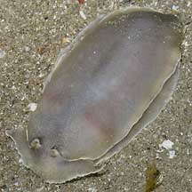
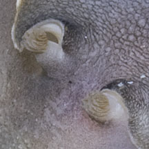
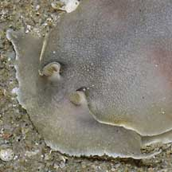
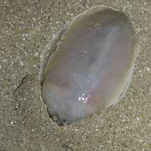
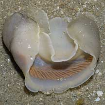
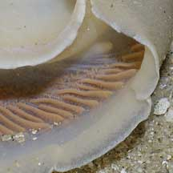

|
|
| nudibranchs text index | photo index |
| Phylum Mollusca > Class Gastropoda > sea slugs > Order Nudibranchia |
| Big
plain armina nudibranch Armina babai Family Arminidae updated May 2020 Where seen? This large unmarked nudibranch is sometimes seen on our Northern shores, burrowing in soft silty areas near seagrasses. When seen, usually several individuals are encountered. Then they are not seen again for some time. Features: Among the large nudibranchs on our shores, it is reported to grow to 50cm long! But those seen were about 8-10cm long. Somewhat squat for an armina, being broad and almost oval in shape. Fleshy body smooth and plain without any markings, usually the same colour as the sand, sometimes with tinges of lilac or pink. Its gills are under the wide mantle skirt. It has a wide shovel-shaped oral veil. When handled, it releases a substance with a strong medicinal smell. What does it eat? As a group, the armina nudibranchs eat soft corals and sea pens. |
 Changi, Jul 06 |
 Rhinophores. |
 Shovel-shaped oral veil. |
|
 Burrowing. Changi, Jul 06 |
 Underside: gills under the mantle skirt. |
 |
| Big plain armina nudibranchs on Singapore shores |
On wildsingapore
flickr
|
Links
References
|